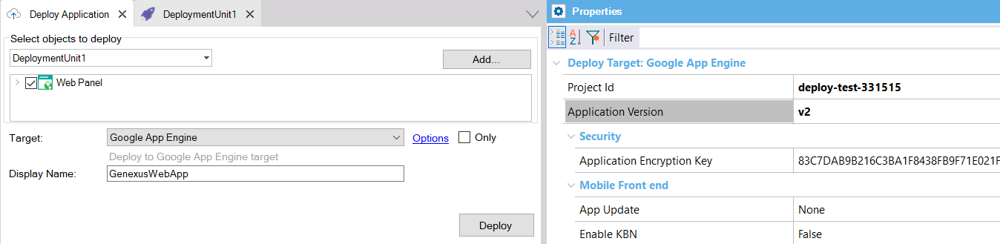
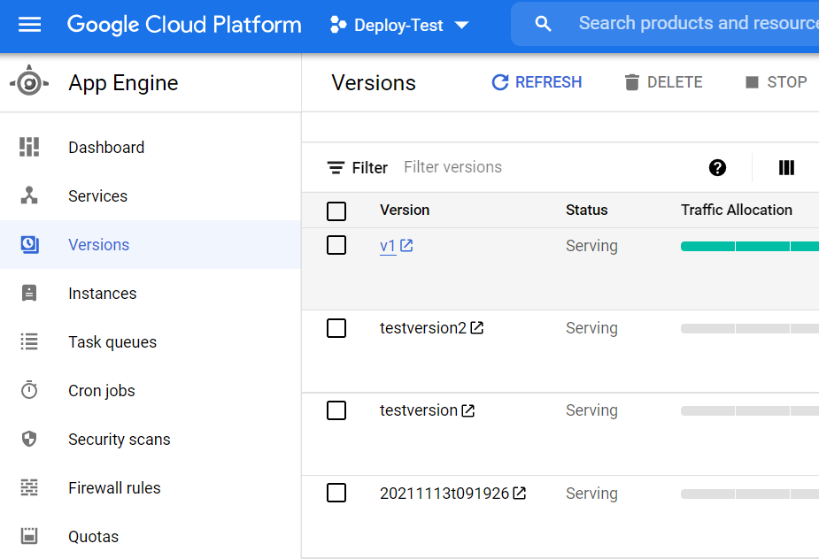

With the Application Deployment tool, you can run Java applications on Google App Engine.
First of all, you need to have set the Google environment using the Google management console.
In addition, before reading this document, we strongly recommend that you take a look at Deployment of an app to Google App Engine: setting up the environment.
1. Select the Main objects to be included in the Deployment Unit object. Then go through the contextual option "Deploy Application" of the deployment unit just created.
2. In Target, select the option "Google App Engine."
3. In the Deployment screen, complete the following:

After selecting the main objects and configuring the necessary properties for the automatic deployment, press the Deploy button.
It will build the WAR package, as well as upload and deploy it on Google App Engine.
You'll see an output similar to the following:
Services to deploy: descriptor: [C:\models\TestDeployGoogle\TestDeployGoogle\Java8\Deploy\GAE\DeploymentUnit1\20211113123339\WEB-INF\appengine-web.xml] source: [C:\models\TestDeployGoogle\TestDeployGoogle\Java8\Deploy\GAE\DeploymentUnit1\20211113123339] target project: [deploy-test-331515] target service: [default] target version: [v2] target url: [https://deploy-test-331515.uc.r.appspot.com] target service account: [App Engine default service account] Beginning deployment of service [default]... #============================================================# #= Uploading 4 files to Google Cloud Storage =# #============================================================# File upload done. Updating service [default]... .............................................................................................................................done. Setting traffic split for service [default]... .....................................done. Deployed service [default] to [https://deploy-test-331515.uc.r.appspot.com] You can stream logs from the command line by running: $ gcloud app logs tail -s default To view your application in the web browser run: $ gcloud app browse Deploying to Google App Engine finished successfully.
After you deploy, your application runs at the URL https://<YOUR_PROJECT_ID>.appspot.com.
Execute the Google console and go through the App Engine panel (Versions option on the left). On the right, you have the list of all the versions deployed and their URL.

For example: [https://20211113t091926-dot-deploy-test-331515.uc.r.appspot.com/com.testdeploygoogle.webpanel1]
Where 20211113t091926 is the version, deploy-test-331515 is the project ID, and com.testdeploygoogle is the Java package name property set in the KB.